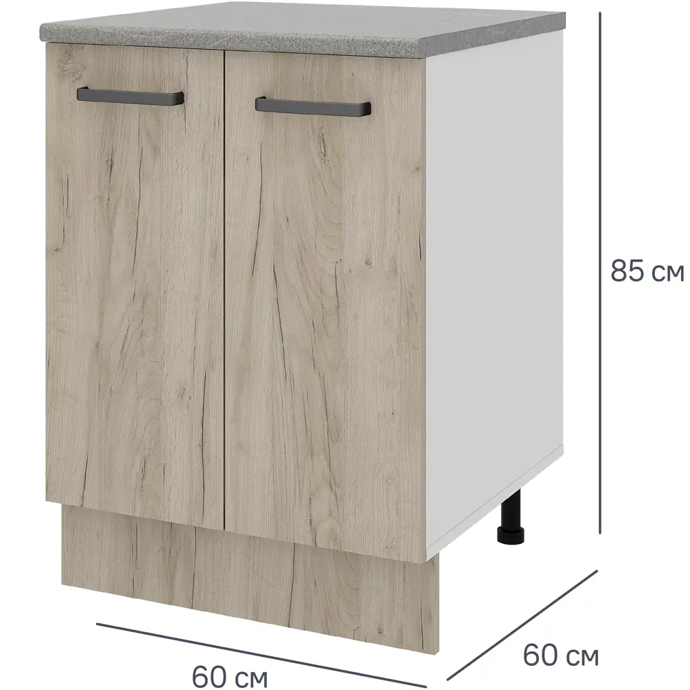
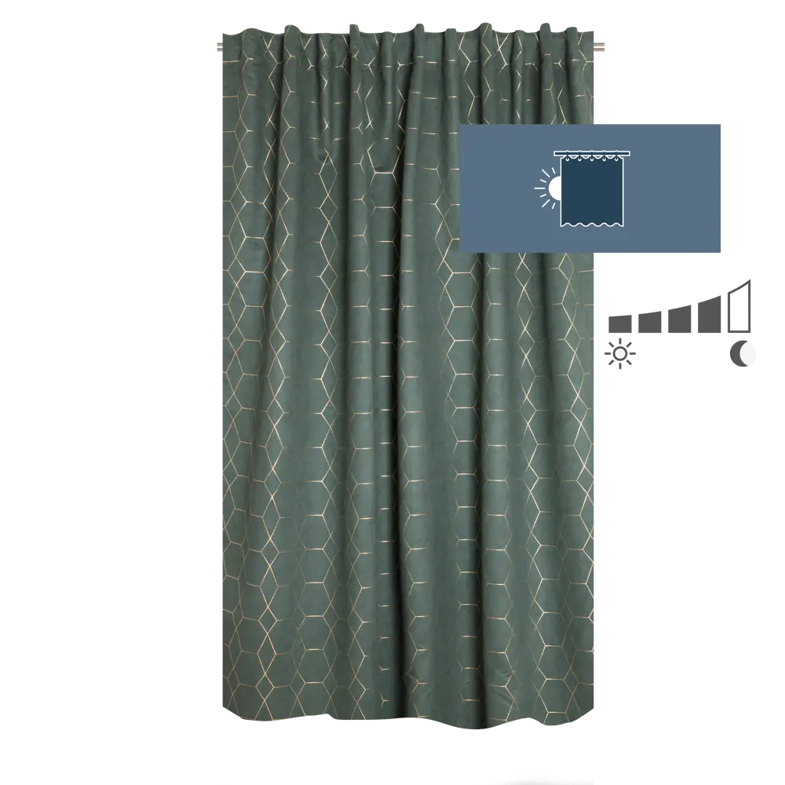

Шкаф напольный Дейма темная 60x85x60 см ЛДСП цвет темный
Шкаф Дейма предназначен для напольной установки. Используется не только для хранения кухонной утвари, но и в качестве рабочего стола для приготовления еды. Оснащен перемещаемой полкой, которая разграничивает внутреннее пространство ящика. Современный внешний вид позволит изделию органично смотреться в интерьере любого помещения. Изготовлен из качественного ЛДСП, который обеспечивает высокую прочность и износостойкость. В комплекте с ящиком также поставляются ножки, фурнитура и ручки

Штора на ленте Calenssie Laguna1 200x280 см цвет темно-бирюзовый.
Безопасный текстиль. Этот товар имеет добровольный экологический сертификат, который гарантирует, что в составе изделия нет вредных для здоровья человека веществ.